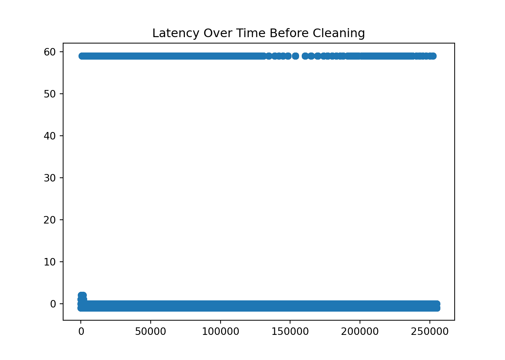

Note: 이 페이지는 키움 API를 통해 Real Time Tick Data를 받아온 후 데이터를 클리닝 하는 과정을 보여주고 있습니다. 오류 및 문의사항은 metrics@kakao.com 으로 메일주시면 감사하겠습니다
데이터 자체에 대한 질문과 데이터 제공에 관한 문의는 000 으로 메일 주시면 감사하겠습니다
R code 블럭과 Python code 블럭은 다음과 같이 색깔로 구분하겠습니다. 결과창은 동일하게 Ivory 색 블럭으로 표시됩니다.
# "이것은 R 코드 입니다."# "이것은 Python 코드 입니다."library(dplyr)
library(tidyverse)
library(DT)
library(reticulate) # Python
#py_install(packages = "matplotlib")
#py_install(packages = "pandas")
#py_install(packages = 'dfply')
options(scipen=999)
options(max.print = 99999999)
options(digits=10)wd = "G:/공유 드라이브/Project_TBD/Stock_Data/real_time/kiwoom_stocks/2021-01-14"
wd2 = "/Volumes/GoogleDrive/공유 드라이브/Project_TBD/Stock_Data/real_time/kiwoom_stocks/2021-01-18"
fn = list.files(path = wd2,
pattern = '.*stocks_trade.*\\.csv') # 마지막 30분 틱데이터 가지고오기
path = paste(wd2,fn[1:4],sep = '/')
# data = readr::read_csv(file = path,
# col_names = c('code','trade_date','timestamp','price','open','high','low',
# 'size','cum_size','ask1','bid1'))
tbl =
list.files(path = wd2, pattern = '.*stocks_trade.*\\.csv') %>%
map_df(~readr::read_csv(paste(wd2,.,sep = '/'),
col_names = c('code','trade_date','timestamp','price','open','high','low',
'size','cum_size','ask1','bid1') ))
sum(is.na(tbl))## [1] 0import numpy as np
import matplotlib.pyplot as plt
import pandas as pd
from datetime import datetime, timedelta
#py_install(packages = "matplotlib")
#py_install(packages = "pandas")
pd.options.display.float_format = '{:.4f}'.format
pd.set_option('display.max_rows', 100)
df_py = r.tbl
df_py.head()## code trade_date timestamp ... cum_size ask1 bid1
## 0 000990 100031.0000 20210118100030.5742 ... 2389083.0000 64300.0000 64200.0000
## 1 001360 100031.0000 20210118100030.7305 ... 3365481.0000 9180.0000 9170.0000
## 2 001510 100031.0000 20210118100030.7461 ... 4455526.0000 907.0000 906.0000
## 3 003490 100031.0000 20210118100030.7773 ... 1538419.0000 31650.0000 31600.0000
## 4 002630 100031.0000 20210118100030.8320 ... 23354062.0000 1860.0000 1855.0000
##
## [5 rows x 11 columns]ss = df_py[df_py.code == '005930'].reset_index(drop=True)
ss.shape## (255036, 11)Delete rows where “second” does not lie between 0 and 59.
Substring the timstamp to get each time component.
# Task 1
ss = ss[ss['timestamp'].apply(lambda x: int(str(int(x*1000000))[12:14])) < 60 ]
# Task4
ss = ss.assign( microsecond = ss['timestamp'].apply(lambda x: str(int(x*1000000))[14:20]),
second = ss['timestamp'].apply(lambda x: str(int(x*1000000))[12:14]),
minute = ss['timestamp'].apply(lambda x: str(int(x*1000000))[10:12]),
hour = ss['timestamp'].apply(lambda x: str(int(x*1000000))[8:10]),
day = ss['timestamp'].apply(lambda x: str(int(x*1000000))[6:8]),
month = ss['timestamp'].apply(lambda x: str(int(x*1000000))[4:6]),
year = ss['timestamp'].apply(lambda x: str(int(x*1000000))[0:4]))
ss.head()## code trade_date timestamp price ... hour day month year
## 0 005930 100031.0000 20210118100031.0391 87200.0000 ... 10 18 01 2021
## 1 005930 100032.0000 20210118100031.3945 87100.0000 ... 10 18 01 2021
## 2 005930 100032.0000 20210118100031.4062 87100.0000 ... 10 18 01 2021
## 3 005930 100032.0000 20210118100031.4570 87100.0000 ... 10 18 01 2021
## 4 005930 100032.0000 20210118100031.4648 87100.0000 ... 10 18 01 2021
##
## [5 rows x 18 columns]ss['time'] = ss.apply(lambda x: datetime(
year = int(x['year']),
month = int(x['month']),
day = int(x['day']),
hour = int(x['hour']),
minute = int(x['minute']),
second = int(x['second']),
microsecond = int(x['microsecond'])).strftime("%H:%M:%S.%f")[:-3], axis=1)
ss['latency'] = ss['timestamp'].apply(lambda x: int(str(int(x*1000000))[8:14])) - ss['trade_date']
ss1 = ss[['time', 'hour', 'minute', 'second', 'price','size','ask1','bid1','latency']]
ss1.head(10)## time hour minute second ... size ask1 bid1 latency
## 0 10:00:31.037 10 00 31 ... 1.0000 87200.0000 87100.0000 0.0000
## 1 10:00:31.393 10 00 31 ... 6.0000 87100.0000 87000.0000 -1.0000
## 2 10:00:31.406 10 00 31 ... 1.0000 87100.0000 87000.0000 -1.0000
## 3 10:00:31.455 10 00 31 ... 1.0000 87100.0000 87000.0000 -1.0000
## 4 10:00:31.463 10 00 31 ... 3.0000 87100.0000 87000.0000 -1.0000
## 5 10:00:31.803 10 00 31 ... 90.0000 87100.0000 87000.0000 -1.0000
## 6 10:00:31.950 10 00 31 ... 20.0000 87100.0000 87000.0000 -1.0000
## 7 10:00:32.462 10 00 32 ... 1.0000 87100.0000 87000.0000 0.0000
## 8 10:00:32.536 10 00 32 ... 52.0000 87100.0000 87000.0000 0.0000
## 9 10:00:32.548 10 00 32 ... 2.0000 87100.0000 87000.0000 0.0000
##
## [10 rows x 9 columns]*Calculate the latency by substracting the tiem provided by Kiwoom dataset and self-recorded time at the moment of processing the data delivered through the Kiwoom API.
# Task 2 & 3
print(ss1.latency.value_counts())## -1.0000 194052
## 0.0000 57420
## -41.0000 3399
## 1.0000 99
## -4041.0000 48
## 2.0000 15
## Name: latency, dtype: int64print(ss1.latency.nsmallest(10))## 28622 -4041.0000
## 28625 -4041.0000
## 28626 -4041.0000
## 28627 -4041.0000
## 51936 -4041.0000
## 51939 -4041.0000
## 51941 -4041.0000
## 51942 -4041.0000
## 51943 -4041.0000
## 73561 -4041.0000
## Name: latency, dtype: float64print(ss1.latency.nlargest(10))## 74 2.0000
## 99 2.0000
## 100 2.0000
## 102 2.0000
## 103 2.0000
## 104 2.0000
## 105 2.0000
## 114 2.0000
## 115 2.0000
## 116 2.0000
## Name: latency, dtype: float64plt.plot(ss1.latency)
plt.title('Latency Over Time Before Cleaning')
pd.set_option('display.max_rows', 200)
ss1[ss1.latency == -41].groupby(['hour','minute','second'])['latency'].agg(['count'])## count
## hour minute second
## 10 01 59 20
## 02 59 12
## 06 59 6
## 07 59 19
## 08 59 7
## ... ...
## 15 14 59 42
## 15 59 35
## 16 59 21
## 17 59 43
## 18 59 35
##
## [309 rows x 1 columns]ss1[ss1.latency == -4041].groupby(['hour','minute','second'])['latency'].agg(['count'])## count
## hour minute second
## 10 59 59 4
## 11 59 59 5
## 12 59 59 9
## 13 59 59 16
## 14 59 59 14ss1[ss1.latency == 2].groupby(['hour','minute','second'])['latency'].agg(['count'])## count
## hour minute second
## 10 01 19 5
## 20 5
## 21 1
## 06 08 3
## 09 1ss2 = ss1[abs(ss1.latency) <=2]
print(ss2.latency.value_counts())## -1.0000 194052
## 0.0000 57420
## 1.0000 99
## 2.0000 15
## Name: latency, dtype: int64plt.plot(ss2.latency)
plt.title('Latency Over Time After Cleaning')ss = df_py[df_py.code == '005380'].reset_index(drop=True)
ss.shape## (49963, 11)Delete rows where “second” does not lie between 0 and 59.
Substring the timstamp to get each time component.
# Task 1
ss = ss[ss['timestamp'].apply(lambda x: int(str(int(x*1000000))[12:14])) < 60 ]
# Task4
ss = ss.assign( microsecond = ss['timestamp'].apply(lambda x: str(int(x*1000000))[14:20]),
second = ss['timestamp'].apply(lambda x: str(int(x*1000000))[12:14]),
minute = ss['timestamp'].apply(lambda x: str(int(x*1000000))[10:12]),
hour = ss['timestamp'].apply(lambda x: str(int(x*1000000))[8:10]),
day = ss['timestamp'].apply(lambda x: str(int(x*1000000))[6:8]),
month = ss['timestamp'].apply(lambda x: str(int(x*1000000))[4:6]),
year = ss['timestamp'].apply(lambda x: str(int(x*1000000))[0:4]))
ss.head()## code trade_date timestamp price ... hour day month year
## 0 005380 100031.0000 20210118100031.3086 244500.0000 ... 10 18 01 2021
## 1 005380 100033.0000 20210118100034.1055 245000.0000 ... 10 18 01 2021
## 2 005380 100031.0000 20210118100031.0000 245000.0000 ... 10 18 01 2021
## 3 005380 100032.0000 20210118100032.1445 245000.0000 ... 10 18 01 2021
## 4 005380 100032.0000 20210118100032.2031 245000.0000 ... 10 18 01 2021
##
## [5 rows x 18 columns]ss['time'] = ss.apply(lambda x: datetime(
year = int(x['year']),
month = int(x['month']),
day = int(x['day']),
hour = int(x['hour']),
minute = int(x['minute']),
second = int(x['second']),
microsecond = int(x['microsecond'])).strftime("%H:%M:%S.%f")[:-3], axis=1)
ss['latency'] = ss['timestamp'].apply(lambda x: int(str(int(x*1000000))[8:14])) - ss['trade_date']
ss1 = ss[['time', 'hour', 'minute', 'second', 'price','size','ask1','bid1','latency']]
ss1.head(10)## time hour minute second ... size ask1 bid1 latency
## 0 10:00:31.307 10 00 31 ... 5.0000 245000.0000 244500.0000 0.0000
## 1 10:00:34.105 10 00 34 ... 2.0000 245000.0000 244500.0000 1.0000
## 2 10:00:31.000 10 00 31 ... 25.0000 245000.0000 244500.0000 0.0000
## 3 10:00:32.143 10 00 32 ... 122.0000 245000.0000 244500.0000 0.0000
## 4 10:00:32.204 10 00 32 ... 1.0000 245000.0000 244500.0000 0.0000
## 5 10:00:33.564 10 00 33 ... 1.0000 245000.0000 244500.0000 0.0000
## 6 10:01:14.587 10 01 14 ... 10.0000 245000.0000 244500.0000 -1.0000
## 7 10:01:15.775 10 01 15 ... 1.0000 245000.0000 244500.0000 0.0000
## 8 10:01:17.385 10 01 17 ... 5.0000 245000.0000 244500.0000 1.0000
## 9 10:01:14.595 10 01 14 ... 51.0000 245000.0000 244500.0000 -1.0000
##
## [10 rows x 9 columns]*Calculate the latency by substracting the tiem provided by Kiwoom dataset and self-recorded time at the moment of processing the data delivered through the Kiwoom API.
# Task 2 & 3
print(ss1.latency.value_counts())## -1.0000 36803
## 0.0000 12435
## -41.0000 684
## -4041.0000 19
## 1.0000 18
## 2.0000 4
## Name: latency, dtype: int64print(ss1.latency.nsmallest(10))## 10981 -4041.0000
## 18299 -4041.0000
## 18300 -4041.0000
## 18301 -4041.0000
## 25396 -4041.0000
## 25397 -4041.0000
## 25398 -4041.0000
## 25399 -4041.0000
## 35282 -4041.0000
## 35283 -4041.0000
## Name: latency, dtype: float64print(ss1.latency.nlargest(10))## 19 2.0000
## 21 2.0000
## 22 2.0000
## 24 2.0000
## 1 1.0000
## 8 1.0000
## 15 1.0000
## 17 1.0000
## 20 1.0000
## 23 1.0000
## Name: latency, dtype: float64plt.plot(ss1.latency)
plt.title('Latency Over Time Before Cleaning')pd.set_option('display.max_rows', 200)
ss1[ss1.latency == -41].groupby(['hour','minute','second'])['latency'].agg(['count'])## count
## hour minute second
## 10 01 59 3
## 06 59 1
## 08 59 2
## 09 59 1
## 10 59 1
## ... ...
## 15 14 59 7
## 15 59 11
## 16 59 10
## 17 59 10
## 18 59 3
##
## [247 rows x 1 columns]ss1[ss1.latency == -4041].groupby(['hour','minute','second'])['latency'].agg(['count'])## count
## hour minute second
## 10 59 59 1
## 11 59 59 3
## 12 59 59 4
## 13 59 59 2
## 14 59 59 9ss1[ss1.latency == 2].groupby(['hour','minute','second'])['latency'].agg(['count'])## count
## hour minute second
## 10 01 19 2
## 20 2ss2 = ss1[abs(ss1.latency) <=2]
print(ss2.latency.value_counts())## -1.0000 36803
## 0.0000 12435
## 1.0000 18
## 2.0000 4
## Name: latency, dtype: int64plt.plot(ss2.latency)
plt.title('Latency Over Time After Cleaning')